CH02-043 — images
【視線の逃避】スマホから目を上げられない理由
ep
CH02
Script Viewer
書庫
snapshot
guide
台本
音声
サムネ
画像
← CH02-042
CH02-044 →
CH02-043
画像
updated_at: 2026-01-14T00:17:50.251371Z
run_id:
CH02-043_mix433_20260106
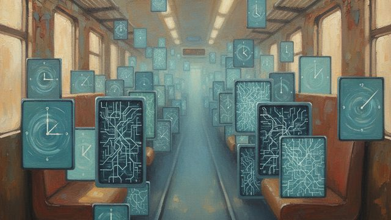
CH02-043
朝の通勤風景／時間の虚しさ／デジタルの罠
CH02-043
プレゼンスバイアスの説明／集中の断片化
CH02-043
完璧主義の罠／人間関係の時間泥棒／無自覚な時間泥棒
CH02-043
時間の穴の発見
CH02-043
通知のまとめ／動画の自動再生／タイムブロッキング
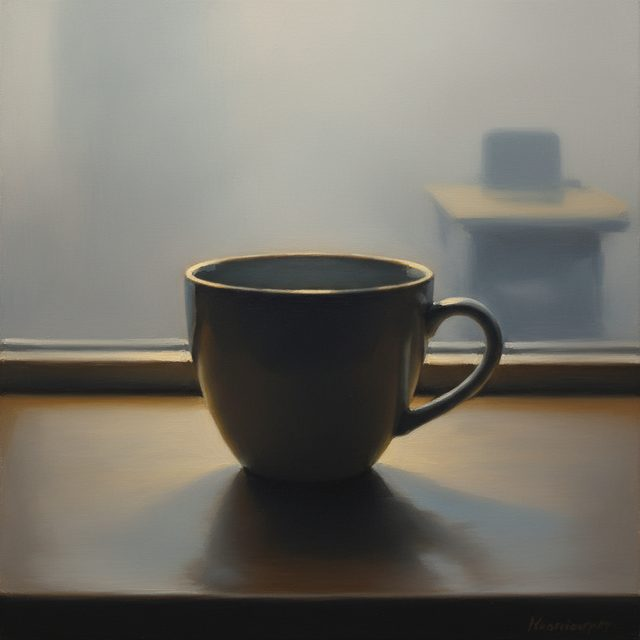
CH02-043
摩擦の創造／会議の時間管理／人間関係の境界線
CH02-043
完璧主義と代替活動
CH02-043
隙間時間の活用
CH02-043
先延ばしの克服／不必要なこだわりの排除
CH02-043
怒りの言語化／家族の時間ルール
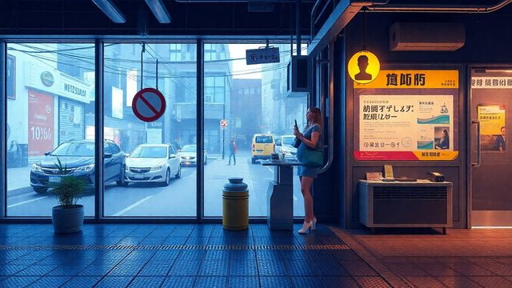
CH02-043
善意の時間泥棒
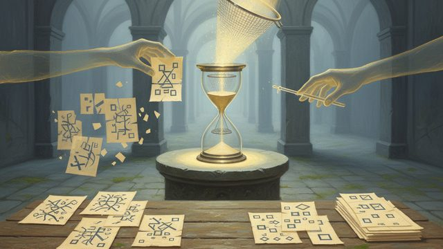
CH02-043
タスクの粒度統一
CH02-043
思考の反芻
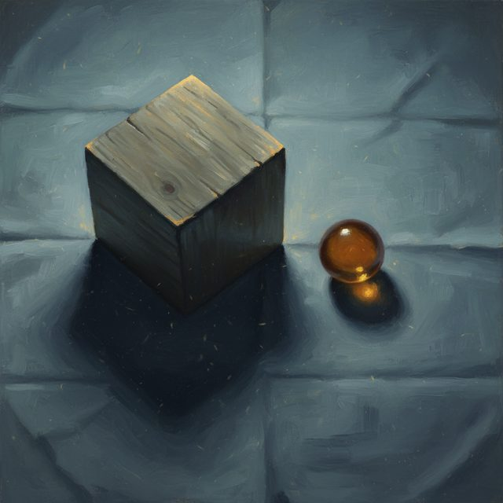
CH02-043
待ち時間の捉え方／マルチタスクの罠
CH02-043
睡眠不足の影響
CH02-043
無料サービスの代償／朝の時間の流れ
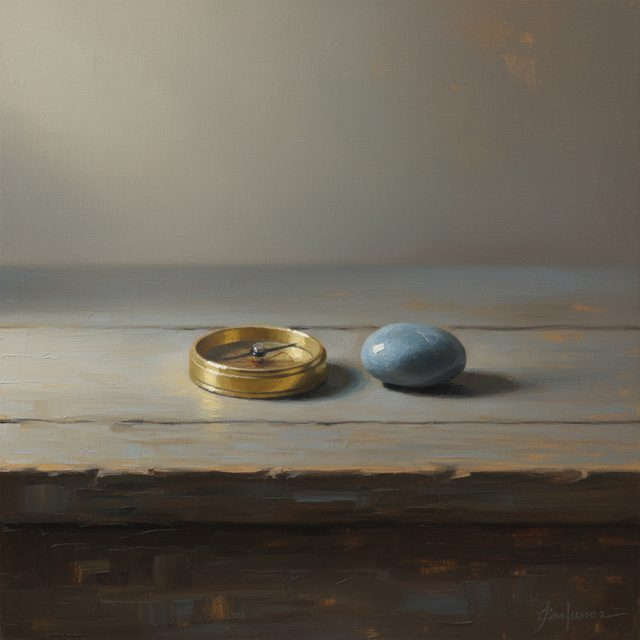
CH02-043
時間の先送り借金
CH02-043
時間の無駄遣い／予定のバランス／無駄な参加の危険
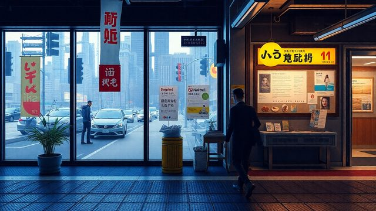
CH02-043
情報の過食／通知の影響
CH02-043
決定疲れの回避／退屈の活用
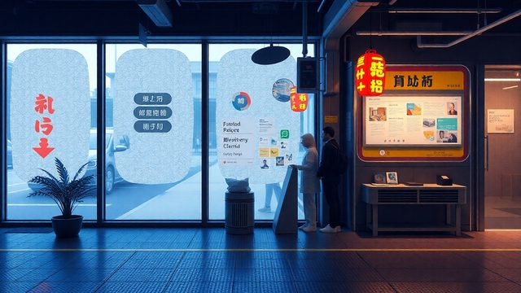
CH02-043
ながら作業の罠
CH02-043
移動時間の観察
CH02-043
断りの難しさ／突然の通話の対策
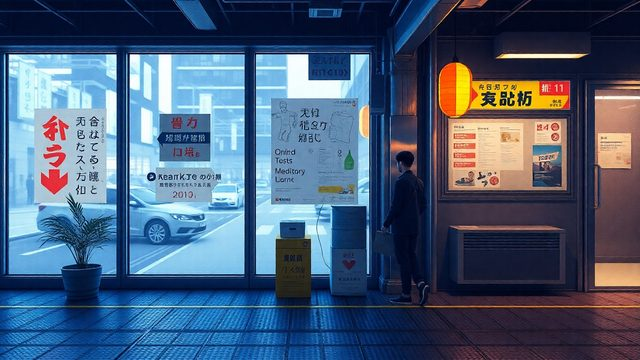
CH02-043
いつかやるの克服
CH02-043
夜のダラダラの改善／即レスの問題
CH02-043
ハイパーボリックディスカウント
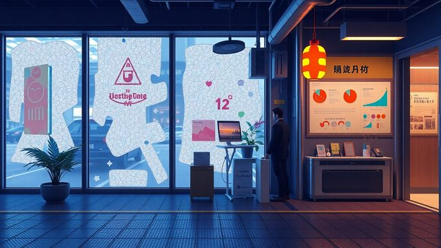
CH02-043
時間泥棒の形の変化
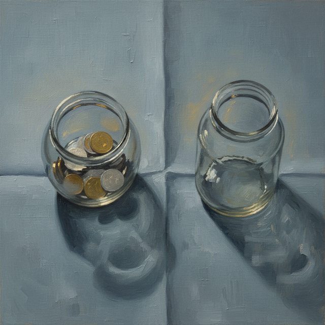
CH02-043
時間の哲学
CH02-043
週末の棚卸し／スクリーンタイムの確認
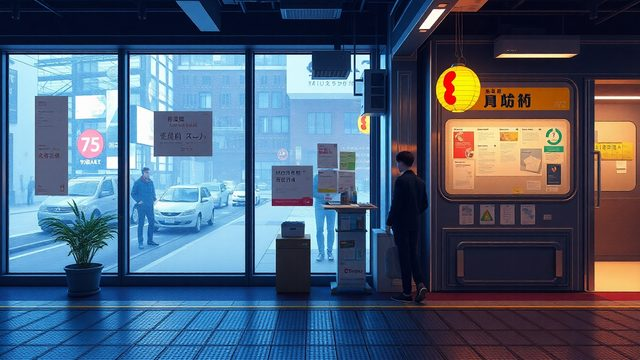
CH02-043
運動の時間循環
CH02-043
体感時間の変化
CH02-043
揺らぎのある計画
CH02-043
大目標の小分け／技術の活用
CH02-043
承認欲求の罠／空腹の影響
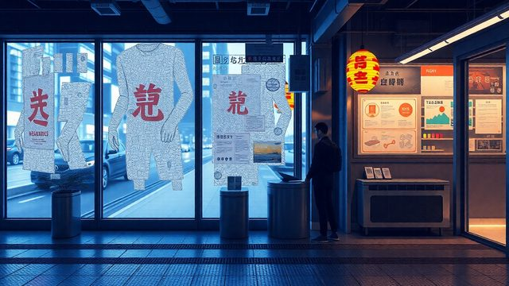
CH02-043
他人の予定の侵食
CH02-043
時間の交換／短い遅延の効果
CH02-043
未来の自分への礼儀
CH02-043
時間泥棒の連鎖／時間の哲学的理解
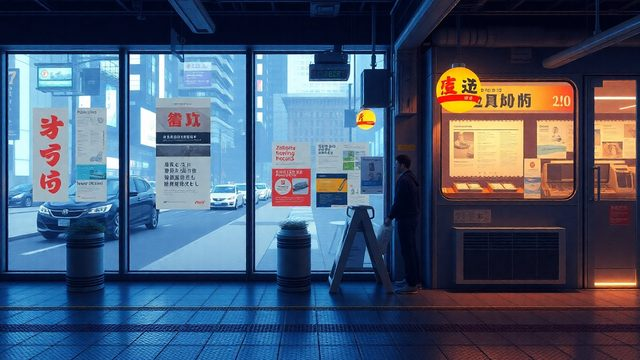
CH02-043
味わう時間の重要性
CH02-043
環境の整理／習慣の変化
CH02-043
偽物の時間泥棒
CH02-043
話の目的の共有
CH02-043
記録の重要性／物の時間泥棒
CH02-043
デジタル断ちの効果／時間の投資／時間の質を上げる
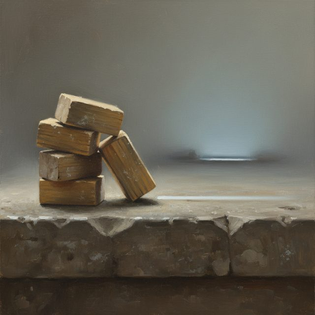
CH02-043